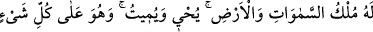
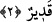

2. Göklerin ve yerin mülkü O’nundur. O, diriltir, öldürür. O, her şeye gücü
yetendir.
“Göklerin ve yerin mülkü O’nundur.” Yâni, göklerde ve yerde ve onların üzerinde ve
içindeki bütün varlıklarda, onları var etmekte ve yok etmekte, bildiğimiz ve
bilmediğimiz diğer her çeşit işlerde ve bütün tasarruflarda, hükmünün geçerliliği ve
hâkimiyet bütünüyle (küllî tasarruf) Allah’ındır.
Denilirse ki, Allah, mülkü ve hükümranlığı sonsuz olduğu halde, burada mülk ve
hükümranlığı sonu olan göklere ve yere nasıl izâfe etti? Fakir (Bursevî) derim ki,
göklerin ve yerin bir zâhirî/görünen yönü vardır. İşte bu mülk âleminden hâl-i hazırda
görünen bu yüzü şekiller ve cisimler kabilinden olduğu için sonludur. Bir de bunların
bâtınî olarak gözle görünmeyen elle tutulmayan sırları ve gerçekleri vardır ki, işte sonu
olmayan bunlardır. Çünkü bunlar melekût ve mânâlar âlemindendir. Bu sebeple
mülkü/hükümranlığı Allah Teâlâ’ya izâfe etmek mutlak bir izâfedir. Hakîkatte sonu
olmayan mülk ve melekût de buna dâhildir. Bilmez misin ki, Kur’ân’ın âyetleri
görünürde sayılı ve sınırlı olduğu halde, hayret verici mânâları sâhili olmayan bir deniz
gibi bitip tükenmiyor. Sırları, konuşması; vahyi olması yönünden de sonsuzdur.
Buradaki mülkten, hükümranlıktan maksad hakîkî mülktür. Bu sûrede açıklanacağı üzere
insanların hükümranlığı, mülkü mecâzîdir.
“O, diriltir, öldürür.” Âyet-i kerîmenin bu kısmı, hükümranlık hükümlerinin bir
kısmını açıklayan başlangıç cümlesidir. Yâni, ölüleri diriltir, sperm ve yumurtaya can
verir, canlıları da öldürür. Öldürmek ve diriltmek, bir şeyi ölü ve bir şeyi diri
kılmaktır. Bu kavramlar bazen hidâyet vermek ve saptırmak yerine istiâre olarak
mecâzen kullanılır. “Ölü iken dirilttiğimiz ve kendisine insanlar arasında
yürüyebileceği bir ışık verdiğimiz kimse, karanlıklar içinde kalıp ondan hiç
çıkamıyacak durumdaki kimse gibi olur mu! İşte kâfirlere yaptıkları böyle süslü
gösterilir.” (el-En’âm, 6/122) âyet-i kerîmesinde olduğu gibi. Allah Teâlâ, “el-Muhyî”
isminin tecellîsiyle kalpleri diriltir, “el-Mümît” isminin tecellîsiyle de nefisleri
öldürür. Veya kalplerin ölmesiyle nefisleri diriltir, nefislerin dirilmesiyle de kalpleri
üstün gelme yoluyla öldürür.
İbni Ata demiştir ki; O, mülkün sâhibidir, hükümranlık tamamiyle O’na mahsûstur.
O’nun işi hükümranlık olduğu için dilediğini öldürür, hükümranlığındaki ihtimâmı
sebebiyle de dilediğini diriltir.
“O, her şeye gücü yetendir.” Eşyâ içinde zikre konu olan şeylerin cümlesi, O’nun
irâde ve hikmetinin gerektirdiği şekilde öldürüp diriltmeğe de kadir olduğu şeylerdir.
Âyet-i kerîmede geçen “kadîr” kelimesi mübâlağa ismi fâil olduğundan tam ve sonsuz
kudret demektir.